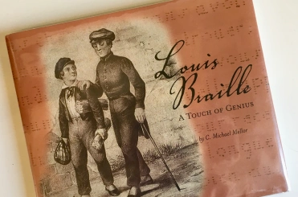

Louis Braille and The Evolution of Braille
What is Braille? Who is the founder? Course about Louis Braille and evolution of braille
Learn MoreWhat is Braille? Who is the founder? Course about Louis Braille and evolution of braille
Learn MoreBraille Reading and Writing Process course provides a comprehensive understanding of the Braille system.This course is all about braille Reading & Writing
Learn MoreTeaching Braille requires a specific set of techniques and approaches to ensure effective learning and mastery of the tactile writing system
Learn More
A Bachelor of Education (B.Ed.) is an undergraduate professional degree program designed to prepare individuals for a career in teaching. It is a popular choice for those who aspire to become teachers at the primary, secondary, or higher secondary levels
Learn MoreA Bachelor of Arts (B.A.) in Sociology is an undergraduate degree program that focuses on the study of human society, social behavior, social institutions, and social change.
Learn MoreA Bachelor of Arts (B.A.) in English is an undergraduate degree program that focuses on the study of the English language, literature, and related fields. It provides students with a comprehensive understanding of the written and spoken aspects of the English language
Learn MoreBachelor of Arts (B.A.) in Political Science is an undergraduate degree program that focuses on the study of political systems, institutions, theories, and processes. It offers students an understanding of political concepts, ideologies, governance, policy-making,
Learn MoreA Bachelor of Arts (B.A.) in History is an undergraduate degree program that focuses on the study of human history, including the exploration of past events, civilizations, cultures, and societal developments
Learn MoreA Bachelor of Arts (B.A.) in Communication is an undergraduate degree program that focuses on the study of various forms of communication, including interpersonal, organizational, mass media, and digital communication.
Learn MoreB.A+B.Ed refers to a combination of two degrees: a Bachelor of Arts (B.A.) and a Bachelor of Education (B.Ed.). This combined program allows individuals to pursue both a bachelor's degree in a specific subject area and a teaching qualification simultaneously.
Learn MoreM.Ed. stands for Master of Education, which is a postgraduate degree that focuses on advanced study in the field of education. It is designed for individuals who have completed a bachelor's degree and want to further enhance their knowledge
Learn MoreA Diploma in Special Education is a specialized program that focuses on equipping individuals with the knowledge and skills to work with students with special needs or disabilities
Learn MoreA Diploma in Teaching Visually Impaired Students is a specialized program that focuses on preparing educators to work with students who have visual impairments or blindness
Learn MoreA Diploma in Teaching Hearing Impaired Students is a specialized program that focuses on preparing educators to work with students who have hearing impairments or deafness
Learn MoreThe B.M.Sc. (Mobility Science) with a specialization in Visual Impairment is an undergraduate degree program that focuses on providing education and training to individuals who want to work with individuals with visual impairments
Learn MoreAn M.A. in Literature is a postgraduate degree program that focuses on the advanced study of literature and literary analysis. It is designed for individuals who have a strong interest in literature
Learn MoreAn M.A. in Literature is a postgraduate degree program that focuses on the advanced study of literature and literary analysis. It is designed for individuals who have a strong interest in literature
Learn MoreAn M.A. in Language is a postgraduate degree program that focuses on the advanced study of language and linguistics. It is designed for individuals who have a strong interest in language, its structure, usage, and socio-cultural aspects, and want to deepen their understanding
Learn More